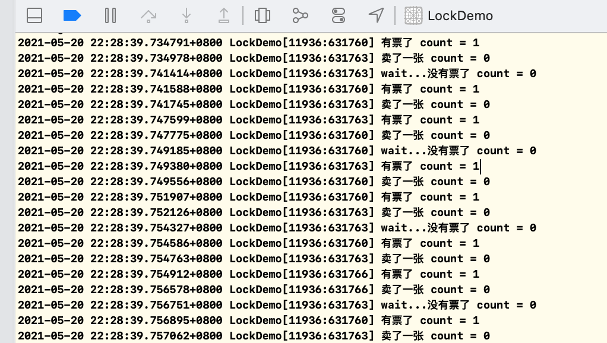

NSLock 老规矩，直接上代码：
1 2 NSLock *lock = [[NSLock alloc] init]; [lock lock];
之所以这么写，就是为了找到NSLock所在的底层库，我们在[lock lock]这一行打个断点，然后使用符号断点symbolic breakpoint添加一个lock的符号，全靠盲猜。因为使用符合断点是最有效的方法，有时候汇编也不一定能进去。
很容易就找到了，这是在foundation框架中的，但是这个框架是没有开源的，怎么搞呢？
还有swift源码哈~莫慌
在NSLock.swift文件中可以找到NSLock的类，下方代码对其做了删减。
1 2 3 4 5 6 7 8 9 10 11 12 13 14 15 16 17 18 19 20 21 22 23 24 25 26 27 28 29 30 31 32 33 34 35 36 37 38 39 40 41 42 43 44 45 46 47 48 49 50 51 52 53 54 open class NSLock: NSObject, NSLocking { internal var mutex = _MutexPointer.allocate(capacity: 1) #if os(macOS) || os(iOS) || os(Windows) private var timeoutCond = _ConditionVariablePointer.allocate(capacity: 1) private var timeoutMutex = _MutexPointer.allocate(capacity: 1) #endif // init 初始化，内部是pthread_mutex_init，是个互斥锁 public override init() { pthread_mutex_init(mutex, nil) #if os(macOS) || os(iOS) pthread_cond_init(timeoutCond, nil) pthread_mutex_init(timeoutMutex, nil) #endif } // dealloc，析构方法 deinit { pthread_mutex_destroy(mutex) mutex.deinitialize(count: 1) mutex.deallocate() #if os(macOS) || os(iOS) || os(Windows) deallocateTimedLockData(cond: timeoutCond, mutex: timeoutMutex) #endif } // 加锁 open func lock() { pthread_mutex_lock(mutex) } // 解锁 open func unlock() { pthread_mutex_unlock(mutex) #if os(macOS) || os(iOS) // Wakeup any threads waiting in lock(before:) pthread_mutex_lock(timeoutMutex) pthread_cond_broadcast(timeoutCond) pthread_mutex_unlock(timeoutMutex) #endif } // tryLock open func `try`() -> Bool { return pthread_mutex_trylock(mutex) == 0 } // lockBeforeDate open func lock(before limit: Date) -> Bool { if pthread_mutex_trylock(mutex) == 0 { return true } #if os(macOS) || os(iOS) || os(Windows) return timedLock(mutex: mutex, endTime: limit, using: timeoutCond, with: timeoutMutex) #endif } open var name: String? }
这些方法在iOS中都可以找到，我们通过源码可以看到内部的实现逻辑。
1 2 3 4 5 6 7 8 9 @interface NSLock : NSObject <NSLocking> { @private void *_priv; } - (BOOL)tryLock; - (BOOL)lockBeforeDate:(NSDate *)limit; @property (nullable, copy) NSString *name API_AVAILABLE(macos(10.5), ios(2.0), watchos(2.0), tvos(9.0));
NSLock内部调用的就是pthread的互斥锁。
首先我们运行一下下面对的代码：
1 2 3 4 5 6 7 8 9 10 11 12 13 14 15 16 17 18 19 20 21 22 23 24 NSLock *lock = [[NSLock alloc] init]; NSRecursiveLock *recursiveLock = [[NSRecursiveLock alloc] init]; for (int i = 0; i < 100; i ++) { dispatch_async(dispatch_get_global_queue(0, 0), ^{ // 1. lock位置 1 //[lock lock]; //[recursiveLock lock]; // 这里定义了一个block static void(^testMethod)(int value); testMethod = ^(int value) { // 2. lock位置 2 //[lock lock]; //[recursiveLock lock]; if (value > 0) { NSLog(@"i = %d, current value = %d", i, value); // block内部调用block，形成了嵌套-递归 testMethod(value - 1); } //[lock unlock]; //[recursiveLock unlock]; }; testMethod(10); }); }
我虽然把锁都写出来了。但是一开始的情况下，我们不加锁运行一下，看是怎么打印的。
打印出来的就是一堆无序的数字。
然后我们使用NSLock，把1处的lock打开，底部unlock也需要打开，再执行一下。
诶~~ 怎么还发生崩溃了呢？就是因为内部发生了递归调用，这个锁已经玩不了了。NSRecursiveLock再运行一下，把1处对应的lock打开。
这次没问题了哈~ 为啥呢？
NSRecursiveLock 我们看一下NSRecursiveLock的源码是啥？
1 2 3 4 5 6 7 8 9 10 11 12 13 14 15 16 17 18 19 20 21 22 23 24 25 26 27 28 29 30 31 32 33 34 35 36 37 38 39 40 41 42 43 44 45 46 47 48 49 50 51 52 53 54 55 56 57 58 59 60 61 62 63 64 65 66 67 open class NSRecursiveLock: NSObject, NSLocking { internal var mutex = _RecursiveMutexPointer.allocate(capacity: 1) #if os(macOS) || os(iOS) || os(Windows) private var timeoutCond = _ConditionVariablePointer.allocate(capacity: 1) private var timeoutMutex = _MutexPointer.allocate(capacity: 1) #endif public override init() { super.init() var attrib = pthread_mutexattr_t() withUnsafeMutablePointer(to: &attrib) { attrs in pthread_mutexattr_init(attrs) pthread_mutexattr_settype(attrs, Int32(PTHREAD_MUTEX_RECURSIVE)) pthread_mutex_init(mutex, attrs) } #if os(macOS) || os(iOS) pthread_cond_init(timeoutCond, nil) pthread_mutex_init(timeoutMutex, nil) #endif } deinit { pthread_mutex_destroy(mutex) mutex.deinitialize(count: 1) mutex.deallocate() #if os(macOS) || os(iOS) || os(Windows) deallocateTimedLockData(cond: timeoutCond, mutex: timeoutMutex) #endif } open func lock() { pthread_mutex_lock(mutex) } open func unlock() { pthread_mutex_unlock(mutex) #if os(macOS) || os(iOS) // Wakeup any threads waiting in lock(before:) pthread_mutex_lock(timeoutMutex) pthread_cond_broadcast(timeoutCond) pthread_mutex_unlock(timeoutMutex) #endif } open func `try`() -> Bool { return pthread_mutex_trylock(mutex) == 0 } open func lock(before limit: Date) -> Bool { if pthread_mutex_trylock(mutex) == 0 { return true } #if os(macOS) || os(iOS) || os(Windows) return timedLock(mutex: mutex, endTime: limit, using: timeoutCond, with: timeoutMutex) #else guard var endTime = timeSpecFrom(date: limit) else { return false } return pthread_mutex_timedlock(mutex, &endTime) == 0 #endif } open var name: String? }
嗯哼？？？怎么跟NSLock中的源码没有什么区别？在init()中有略微的不同
1 2 3 4 5 6 7 8 9 10 11 12 13 14 15 public override init() { super.init() var attrib = pthread_mutexattr_t() withUnsafeMutablePointer(to: &attrib) { attrs in pthread_mutexattr_init(attrs) // 设置互斥锁的类型 RECURSIVE（递归） pthread_mutexattr_settype(attrs, Int32(PTHREAD_MUTEX_RECURSIVE)) pthread_mutex_init(mutex, attrs) } #if os(macOS) || os(iOS) pthread_cond_init(timeoutCond, nil) pthread_mutex_init(timeoutMutex, nil) #endif }
这下就清晰了，NSRecursiveLock在内部是一个互斥锁设置了递归的类型，只有这一点点的区别，就导致上方的代码运行出现那么大的区别。
lock的位置 我们继续看上方的代码，把lock的位置放在2.的位置。分别打开NSLock和NSRecursiveLock看看有什么不同：
打开NSLock
1 2021-05-20 00:05:11.816871+0800 LockDemo[10150:520495] i = 0, current value = 10
只有一条输出？
因为NSLock只是一个互斥锁，执行了lock操作之后，就必须等待unlock才能继续执行，否则就一直等待。
打开NSRecursiveLock
竟然发生了crash，但是current value的值是有序的，i的值却是无序的，这是个啥情况？
也就是说，递归锁我用了，但是递归执行中，线程与线程直接，递归没有直接的联系，也就是递归锁在多线程中跑偏了~造成了锁内部发生了错乱，导致了crash。
所以啊，别总乱加锁。那么有人可能会说，我直接在调用的时候加锁不就可以了吗，还很省事，不用担心发生crash。
1 2 3 [lock lock]; testMethod(10); [lock unlock];
肯定不行啊，这样只是控制了，递归调用不会出现问题，但是i的值呢？
不管你这这里使用NSLock或NSRecursiveLock都是一样的效果。所以，这种情况，我们经常会使用@synchronized (self)，不用管什么时候加锁和什么时候解锁，也不用担心会发生等待、崩溃。而且性能上，并没有差多少。
1 2 3 4 5 6 7 8 testMethod = ^(int value) { @synchronized (self) { if (value > 0) { NSLog(@"i = %d, current value = %d", i, value); testMethod(value - 1); } } }
NSCondition 条件变量 NSCondition的对象实际上作为一个锁和一个线程检查器：锁主要为了当检测条件时保护数据源，执行条件引发的任务；线程检查器主要是根据条件决定是否继续运行线程，即线程是否被阻塞。
1 2 3 4 5 6 7 8 9 10 11 12 13 14 15 16 17 18 19 20 21 22 23 @interface NSCondition : NSObject <NSLocking> { // 让当前线程处于等待状态 - (void)wait; // 在时间到达之前让当前线程一直等待 - (BOOL)waitUntilDate:(NSDate *)limit; /** * CPU发送信号，唤醒等待条件的一个线程，可以执行。可以多次调用，唤醒多个线程。 * 没有线程等待，则什么也不处理。只有在被锁的情况下才可以调用 */ - (void)signal; /** * 唤醒等待的所有线程，如果没有等待，则什么也不做。只有在被锁的情况下才可以调用 */ - (void)broadcast; @property (nullable, copy) NSString *name; @end // 一般用于多线程同时访问、修改同一个数据源，保证在同一 时间内数据源只被访问、修改一次，其他线程的命令需要在lock外等待，只到unlock ，才可访问 - (void)lock; // 与lock同时使用。 - (void)unlock;
接下来我们看代码：
1 2 3 4 5 6 7 8 9 10 11 12 13 14 15 16 17 18 19 20 21 22 23 24 25 26 27 - (void)conditionTest { self.ticketCount = 0; for (int i = 0; i < 100; i++) { dispatch_async(dispatch_get_global_queue(0, 0), ^{ [self addTicket]; }); dispatch_async(dispatch_get_global_queue(0, 0), ^{ [self saleTicket]; }); dispatch_async(dispatch_get_global_queue(0, 0), ^{ [self saleTicket]; }); dispatch_async(dispatch_get_global_queue(0, 0), ^{ [self addTicket]; }); } } - (void)addTicket { self.ticketCount += 1; NSLog(@"有票了 %ld", self.ticketCount); } - (void)saleTicket { self.ticketCount -= 1; NSLog(@"卖了一张 %ld", self.ticketCount); }
运行一下代码。
都有可能卖超了。怎么解决这个问题，虽然上面的锁能解决，但是我们使用NSCondition来处理。
1 2 3 4 5 6 7 8 9 10 11 12 13 14 15 16 17 18 19 20 21 22 23 24 - (void)addTicket { // 加锁 [self.condition lock]; self.ticketCount += 1; NSLog(@"有票了 count = %ld", self.ticketCount); // 通知，有票了，等待的线程可以执行了 [self.condition signal]; // 解锁 [self.condition unlock]; } - (void)saleTicket { // 加锁 [self.condition lock]; if (self.ticketCount == 0) { NSLog(@"wait...没有票了 count = 0"); // 没有票，就等待，不执行，等到有票了再执行 [self.condition wait]; } // 有票了，就执行了 self.ticketCount -= 1; NSLog(@"卖了一张 count = %ld", self.ticketCount); [self.condition unlock]; }
运行一下，看看结果

很是完美，NSCondition条件变量是很少使用的，因为用起来比较麻烦。其主要的点就是在什么时候执行wait、什么时候发送signal。
看了代码的运用，我们看看内部是怎么实现的。
NSCondition 内部实现 1 2 3 4 5 6 7 8 9 10 11 12 13 14 15 16 17 18 19 20 21 22 23 24 25 26 27 28 29 30 31 32 33 34 35 36 37 38 39 40 41 42 43 44 45 46 47 48 49 50 51 52 53 54 55 56 57 58 59 60 61 62 63 64 65 66 67 68 69 70 71 72 73 74 75 76 77 78 79 80 81 82 83 84 85 86 open class NSCondition: NSObject, NSLocking { internal var mutex = _MutexPointer.allocate(capacity: 1) // 条件 internal var cond = _ConditionVariablePointer.allocate(capacity: 1) public override init() { #if os(Windows) InitializeSRWLock(mutex) InitializeConditionVariable(cond) #else // 内部封装了pthread 的互斥锁 pthread_mutex_init(mutex, nil) pthread_cond_init(cond, nil) #endif } deinit { #if os(Windows) // SRWLock do not need to be explicitly destroyed #else pthread_mutex_destroy(mutex) pthread_cond_destroy(cond) #endif mutex.deinitialize(count: 1) cond.deinitialize(count: 1) mutex.deallocate() cond.deallocate() } open func lock() { #if os(Windows) AcquireSRWLockExclusive(mutex) #else pthread_mutex_lock(mutex) #endif } open func unlock() { #if os(Windows) ReleaseSRWLockExclusive(mutex) #else pthread_mutex_unlock(mutex) #endif } // 等待 open func wait() { #if os(Windows) SleepConditionVariableSRW(cond, mutex, WinSDK.INFINITE, 0) #else pthread_cond_wait(cond, mutex) #endif } open func wait(until limit: Date) -> Bool { #if os(Windows) return SleepConditionVariableSRW(cond, mutex, timeoutFrom(date: limit), 0) #else guard var timeout = timeSpecFrom(date: limit) else { return false } return pthread_cond_timedwait(cond, mutex, &timeout) == 0 #endif } // 发送信号 open func signal() { #if os(Windows) WakeConditionVariable(cond) #else pthread_cond_signal(cond) #endif } // 唤醒所有条件 open func broadcast() { #if os(Windows) WakeAllConditionVariable(cond) #else // 根据window的释义，唤醒所有条件锁 pthread_cond_broadcast(cond) #endif } open var name: String? }
NSCondition内部封装的是一个pthread的互斥锁。
NSConditionLock 条件锁 1 2 3 4 5 6 7 8 9 10 11 12 13 14 // 初始化当前的条件 - (instancetype)initWithCondition:(NSInteger)condition; // 只读，当前的条件 @property (readonly) NSInteger condition; // 当前线程加锁，如果当前条件与参数一致，则执行，否则等待，直到有对应的条件被解锁。 - (void)lockWhenCondition:(NSInteger)condition; // 解锁，然后把条件传尽来，如果有等待的线程，并且条件与condition相同则执行，没有不处理。 - (void)unlockWithCondition:(NSInteger)condition; // 加锁，没有条件，可以的话直接执行 - (void)lock; // 解锁 - (void)unlock;
接下来，看一下代码：
1 2 3 4 5 6 7 8 9 10 11 12 13 14 15 16 17 18 19 - (void)conditonLockTest { NSConditionLock *conditionLock = [[NSConditionLock alloc] initWithCondition:2]; dispatch_async(dispatch_get_global_queue(DISPATCH_QUEUE_PRIORITY_HIGH, 0), ^{ // [conditionLock lockWhenCondition:1]; NSLog(@"1"); // [conditionLock unlockWithCondition:0]; }); dispatch_async(dispatch_get_global_queue(DISPATCH_QUEUE_PRIORITY_LOW, 0), ^{ // [conditionLock lockWhenCondition:2]; NSLog(@"2"); // [conditionLock unlockWithCondition:1]; }); dispatch_async(dispatch_get_global_queue(0, 0), ^{ // [conditionLock lock]; NSLog(@"3"); // [conditionLock unlock]; }); }
我们先不使用NSConditionLock，跑一下代码看看，输出情况：
根据之前GCD全局队列的内容，该输出可能很随意，每次输出都可能不一样。那接下来把注释的代码打开，在有锁的情况下，再跑一次。
这次的输出结果为：3-2-1，也有可能是2-3-1。NSConditionLock的条件是2，而且是全局并发队列，所以2和3都有可能先执行，但是1肯定是最后执行。因为在2执行完毕之后，才解锁，并把条件该成了1。这个时候才通知条件为1的锁执行。
条件锁有点类似信号量。
NSConditionLock 源码： 1 2 3 4 5 6 7 8 9 10 11 12 13 14 15 16 17 18 19 20 21 22 23 24 25 26 27 28 29 30 31 32 33 34 35 36 37 38 39 40 41 42 43 44 45 46 47 48 49 50 51 52 53 54 55 56 57 58 59 60 61 62 63 64 65 66 67 68 69 70 71 72 73 74 75 76 77 78 79 80 81 82 83 84 85 86 87 88 89 90 91 92 93 94 95 96 97 98 99 100 101 102 103 104 105 106 open class NSConditionLock : NSObject, NSLocking { // 内部封装了一个NSCondition internal var _cond = NSCondition() // int类型的数据，当做锁的条件 internal var _value: Int internal var _thread: _swift_CFThreadRef? // 默认init操作，condition == 0 public convenience override init() { self.init(condition: 0) } public init(condition: Int) { _value = condition } // 加锁 open func lock() { let _ = lock(before: Date.distantFuture) } // 解锁，直接_thread=nil，并且唤醒其他线程 open func unlock() { _cond.lock() #if os(Windows) _thread = INVALID_HANDLE_VALUE #else _thread = nil #endif _cond.broadcast() _cond.unlock() } // 可读的condition open var condition: Int { return _value } // 加锁，并且当条件满足时执行， open func lock(whenCondition condition: Int) { // 这里详细说明 let _ = lock(whenCondition: condition, before: Date.distantFuture) } open func `try`() -> Bool { return lock(before: Date.distantPast) } open func tryLock(whenCondition condition: Int) -> Bool { return lock(whenCondition: condition, before: Date.distantPast) } // 解锁，并且设置条件 open func unlock(withCondition condition: Int) { _cond.lock() #if os(Windows) _thread = INVALID_HANDLE_VALUE #else _thread = nil #endif // 设置条件锁的条件，并且执行等待的条件锁 _value = condition _cond.broadcast() _cond.unlock() } open func lock(before limit: Date) -> Bool { _cond.lock() while _thread != nil { if !_cond.wait(until: limit) { _cond.unlock() return false } } #if os(Windows) _thread = GetCurrentThread() #else _thread = pthread_self() #endif _cond.unlock() return true } // open func lock(whenCondition condition: Int, before limit: Date) -> Bool { // NSCondition 加锁 _cond.lock() // 这里是一个while循环，当条件不满足时，就一直循环下去，除非不是等待状态。 while _thread != nil || _value != condition { if !_cond.wait(until: limit) { _cond.unlock() return false } } // 当条件满足，直接跳出while循环，向下执行。 #if os(Windows) _thread = GetCurrentThread() #else _thread = pthread_self() #endif _cond.unlock() return true } open var name: String? }
NSConditionLock内部封装了NSCondtion，使用起来比NSCondtion更加方便。这个也是一个互斥锁。
总结
@synchronized(obj)
objc_sync_enter加锁、objc_sync_exit解锁
查找obj的流程：当前链表查找 - 线程池中查找 - hash表中查找
不要乱用obj
NSLock - pthread的互斥锁
NSRecursiveLock - 递归锁，封装的也是互斥锁，内部原理与NSLock一致，只是设置了递归的类型。
NSCondtion - 互斥锁
NSConditionLock - 互斥锁